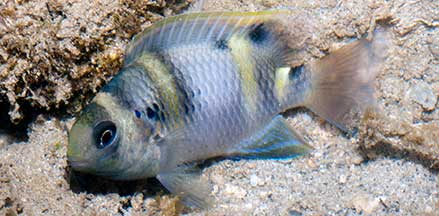
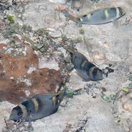
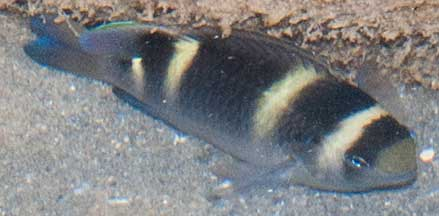
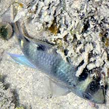
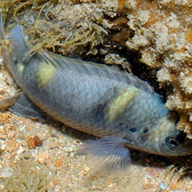
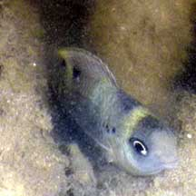

|
|
| fishes text index | photo index |
| Phylum Chordata > Subphylum Vertebrata > fishes > Family Pomacentridae |
| Yellow-banded
damselfish Dischistodus fasciatus Family Pomacentridae updated Oct 2020 Where seen? Resembling an aquatic bumble bee, fat boldly barred juveniles of this fish is sometimes seen on our Southern shores, near living corals. Larger ones are also sometimes seen. Elsewhere, they are found in silty lagoons, coastal reefs near coral outcrops and seagrass beds, near clear mangrove coasts among rubble. Features: To about 11cm, those seen much smaller, about 4-6cm long. Small ones with 4 thick yellow bars and 5 thick black bars across the body. Juveniles are rather nervous and dart about quickly, making sudden changes in direction. As they grow bigger, they may have a dark black blotch on their dorsal fin, dark areas may be bluish especially at night. Adults dark with 4 yellow bars. |
 Juvenile. Lazarus Island, Aug 12 |
 Juvenile Raffles Lighthouse, Jul 06 |
 Seen in small groups. Raffles Lighthouse, Jul 06 |
 Adult. Pulau Pawai, Dec 09 |
 Seen in small groups. Pulau Senang, Aug 10 |
 Adult. Sisters Island, Jul 07 |
 Adult. Tanah Merah, Jun 11 |
| Yellow-banded damsels on Singapore shores |
On wildsingapore
flickr
|
| Other sightings on Singapore shores |
 St John's Island, Oct 20 Photo shared by Loh Kok Sheng on facebook. |
 Terumbu Pempang Tengah, May 11 Photo shared by Loh Kok Sheng on his blog. |
 Pulau Sudong, Dec 09 Photo shared by Ivan Kwan on his flickr. |
| Acknowledgement With grateful thanks to Jeffrey Low for identifying this fish. Links
References
|